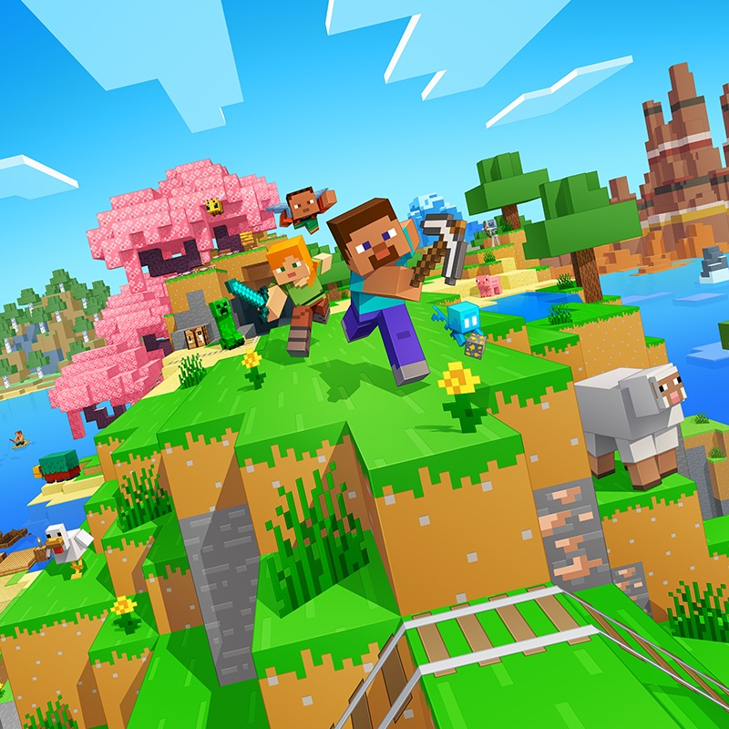
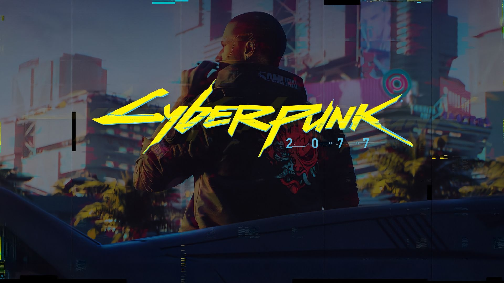
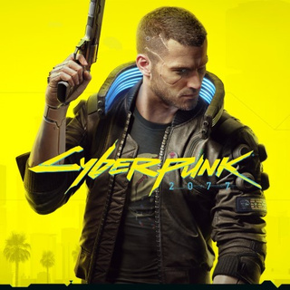
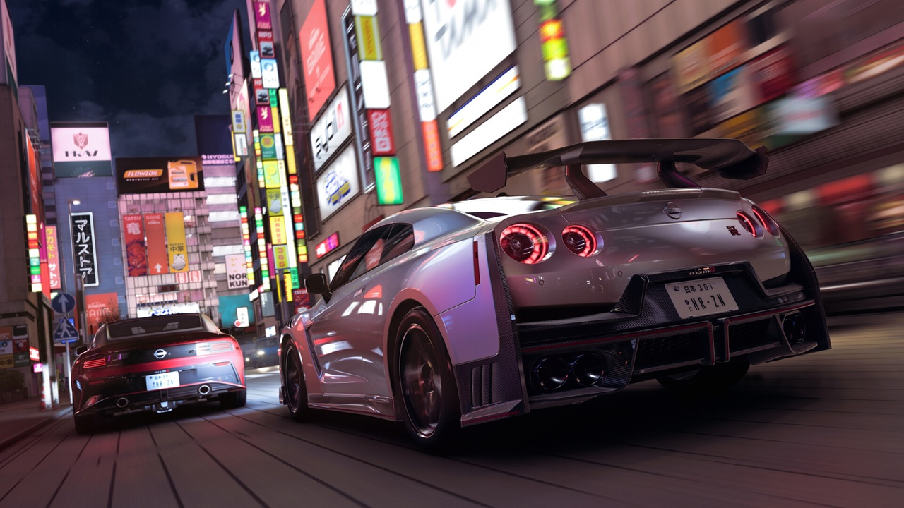
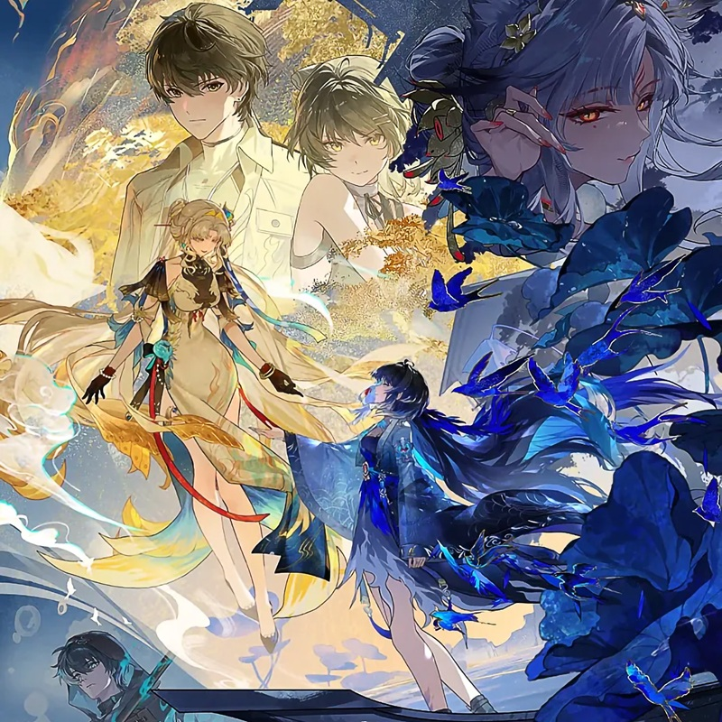

独立思考，明辨是非
海内存知己，天涯若比邻。你好👋很高兴能在这里见到，我是星月Fox，17岁高中生。
技术极客，对于UI设计/前端感兴趣。擅长Windows系统的各种乱玩（
交换友链？
向我 发送邮件✉️， 或者使用其他联系方式？请见页尾
我的个人主页：当前网页
目前正在使用 Fluent 2 Design设计规范 改进此页面





最后维护于 2026/07/11
[7月更新]此次更新修复了已知问题
网页内嵌式图片正在完善，目前此链接是一个由Google托管的页面
由X用户@KiriyumeBun提供文件，包含剧情CG图，版本活动图及版本动态视频封面
先放个咖啡厅（
由星月为您呈现@2026 星月。